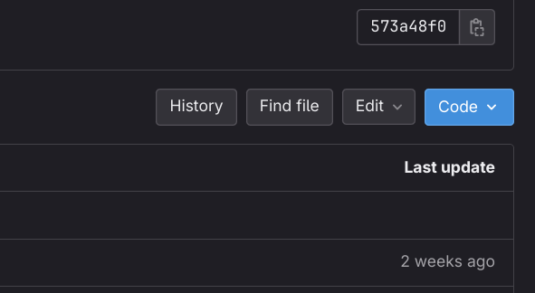

Dossier Installation
Prérequis
Avant d'installer Nooblety, assurez-vous que votre ordinateur répond aux exigences de configuration.
Installation
1. Désactiver Windows Defender et/ou votre antivirus. Lorsque vous téléchargez le jeu, il se peut que le fichier soit considéré comme infecté/malveillant. Ce n'est pas le cas. Il s'agit d'un faux positif, alors ne le bloquez surtout pas. Si vous avez besoin d'aide pour désactiver Windows Defender, vous pouvez consulter ce tutoriel.
2. Aller sur le dépôt Gitlab du jeu: https://git.unistra.fr/t3-michel-morawien-kiefner/mod23-d
3. Télécharger le fichier Nooblety-Setup.exe
4. Exécuter le fichier Nooblety-Setup.exe puis cliquez “Informations supplémentaires” et “Exécuter quand même”. Puis donnez les droits d’administrateurs a l’application
5. Suivre les instructions de l’installation
6. Une fois l’installation terminée, vous pouvez lancer le jeu
1. Aller sur le dépôt Gitlab du jeu: https://git.unistra.fr/t3-michel-morawien-kiefner/mod23-d
2. Télécharger le dossier Linux en cliquant sur le bouton code pour le sytème de compression que vous souhaitez.

3. Extraire le dossier Linux:
zip:
tar.gz:
4. Ouvrir le dossier extrait
5. Lancez le fichier Nooblety.x86_64
1. Aller sur le dépôt Gitlab du jeu: https://git.unistra.fr/t3-michel-morawien-kiefner/mod23-d
2. Télécharger le dossier MacOS en cliquant sur le bouton code pour le sytème de compression que vous souhaitez.
3. Extraire le dossier MacOS:
zip:
tar.gz:
4. Ouvrir le dossier extrait
5. Lancez le fichier Nooblety.app
Désinstallation
1. Ouvrir le menu démarrer
2. Chercher “Ajouter ou supprimer des programmes” et cliquer dessus
3. Chercher “Nooblety” dans la liste des applications installées
4. Cliquer sur “Désinstaller”
5. Suivre les instructions de la désinstallation
1. Ouvrir le terminal
2. Se placer dans le dossier d’installation de Nooblety
3. Lancer la commande suivante:
4. Entrer votre mot de passe
1. Ouvrir le Finder
2. Aller dans le dossier Applications
3. Chercher “Nooblety” dans la liste des applications installées
4. Faire un clic droit sur “Nooblety” et cliquer sur “Mettre dans la corbeille”
5. Vider la corbeille
Conseils pour résoudre les problèmes d'installation
Vérifiez les prérequis système
Assurez-vous que votre système d'exploitation (Windows, Linux, MacOS) est à jour et qu'il répond aux exigences minimales spécifiées. Assurez-vous d'avoir suffisamment d'espace disque disponible pour l'installation.
Désactivez l'antivirus
Si vous utilisez Windows et que l'antivirus Windows Defender bloque l'installation, cliquez sur "Plus d'infos" puis sur "Exécuter quand même" pour autoriser l'installation.
Téléchargez le bon fichier d'installation
Assurez-vous de télécharger le fichier d'installation correspondant à votre système d'exploitation (Windows, Linux, MacOS).
Exécutez en tant qu'administrateur
Si vous rencontrez des problèmes d'autorisation lors de l'installation, essayez d'exécuter le programme d'installation en tant qu'administrateur. Faites un clic droit sur le fichier d'installation et sélectionnez "Exécuter en tant qu'administrateur".
Vérifiez les messages d'erreur
Si vous obtenez un message d'erreur lors de l'installation, notez-le soigneusement. Il peut fournir des indices sur la nature du problème.
Utilisez le support technique
Si vous ne parvenez pas à résoudre un problème d'installation, contactez le support technique en utilisant le formulaire ci-dessous. Expliquez le problème en détail et fournissez tous les messages d'erreur que vous avez rencontrés.
Vérifiez l'espace disque disponible
Assurez-vous que vous avez suffisamment d'espace disque disponible sur votre système pour l'installation. Si votre disque dur est presque plein, cela peut entraîner des problèmes d'installation.
Mettez à jour les pilotes
Assurez-vous que vos pilotes de matériel, tels que les pilotes de carte graphique et de carte son, sont à jour. Les pilotes obsolètes peuvent parfois causer des problèmes d'installation.
Exécutez des outils de diagnostic
Certains systèmes d'exploitation, comme Windows, offrent des outils de diagnostic intégrés qui peuvent vous aider à identifier les problèmes d'installation. Essayez de les utiliser si nécessaire.
Problèmes Courants et Solutions
Si vous rencontrez des problèmes d'installation courants, consultez cette section pour trouver des solutions possibles. Voici quelques problèmes courants et leurs solutions :
Problème : L'installation ne démarre pas.
Solution : Assurez-vous que votre système répond aux exigences minimales de Nooblety. Vérifiez également que vous téléchargez la version correcte du jeu pour votre système d'exploitation.
Problème : Le jeu plante ou se bloque fréquemment.
Solution : Mettez à jour vos pilotes graphiques et assurez-vous d'avoir les dernières mises à jour système. Réduisez les paramètres graphiques dans le jeu si nécessaire.
Informations de Contact
Si vous avez des problèmes d'installation ou des questions techniques, n'hésitez pas à nous contacter via notre Formulaire de Support Technique. Notre équipe de support est là pour vous aider et résoudre tout problème que vous pourriez rencontrer lors de l'installation de Nooblety. Nous espérons que ces informations vous seront utiles et que vous pourrez profiter pleinement de Nooblety. Si vous avez d'autres questions ou préoccupations, n'hésitez pas à nous contacter.